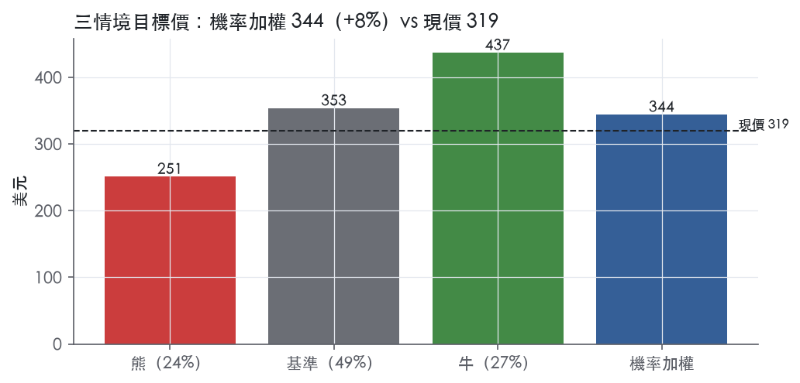
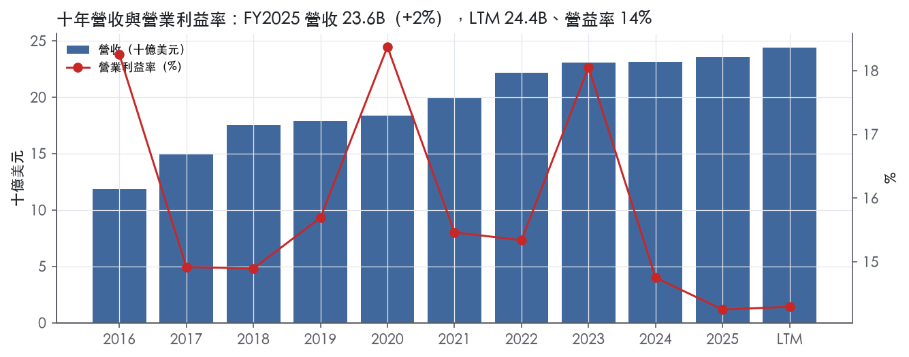
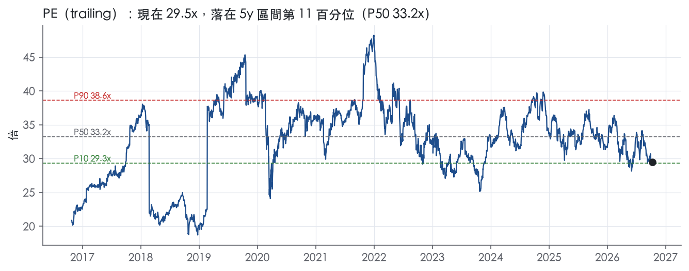
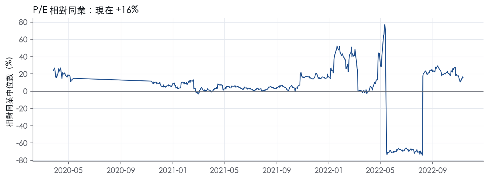
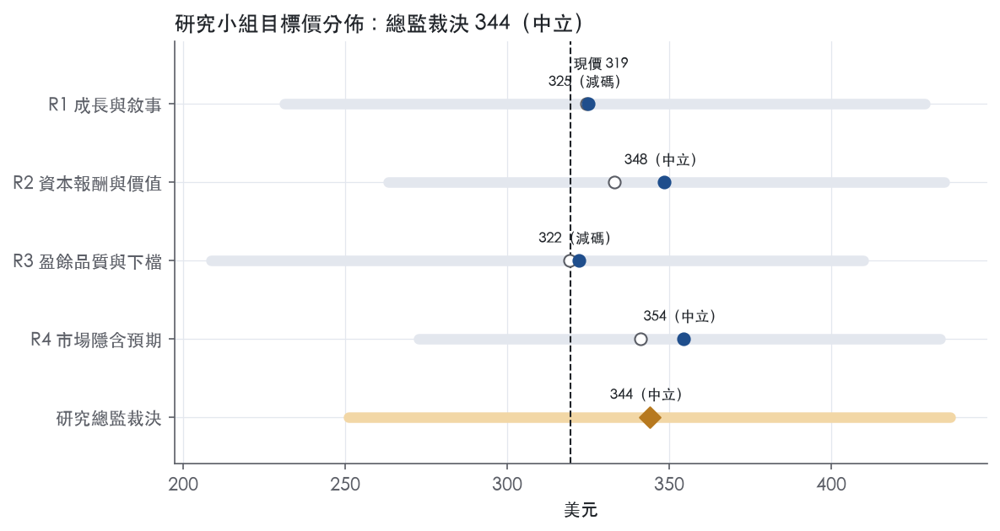
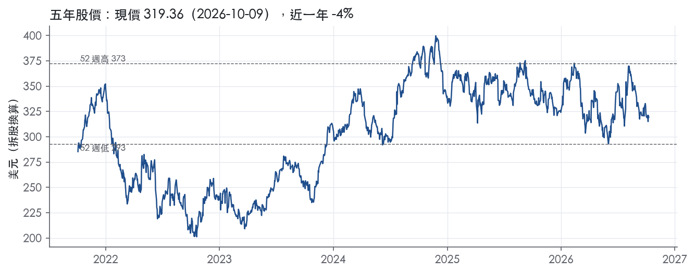

評等總表 › 原物料 › SHW
盈餘被低估、倍數不擴張，中性｜評等 中立｜目標價 344
| 評等 | 中立 |
| 12 個月目標價 | 344 美元 |
| 現價 | 319.36 美元（2026-10-09） |
| 預期報酬 | 股價 +7.7%＋股息 1.0%＝總報酬 +8.7%；同業籃門檻 8.0%，超額 +0.7% |
| 估值方法 | P/E 28.0x，套在第 5–8 季的EPS（也就是一年後的未來四季） |
| 三情境 | 熊 251／基準 353／牛 437 |
| 研究流程 | 四位研究員兩輪辯論＋研究總監裁決 |
| 資料來源 | SEC EDGAR XBRL、Tiingo、FRED（全免費） |
盈餘被低估、倍數不擴張，中性（研究總監裁決，四位研究員兩輪辯論後）
評等 中立｜12 個月目標價 344 美元（總監三情境機率加權 351 與研究員中位數 337 各半）｜現價 319.36（2026-10-09）
預期報酬：股價 +7.7%＋股息 1.0%＝總報酬 +8.7%。同業籃門檻 8.0%，超額 +0.7%。
估值方法：P/E 28.0x，套在第 5–8 季的EPS（也就是一年後的未來四季）。三情境：熊 251（24%）／基準 353（49%）／牛 437（27%）。
什麼會讓研究總監改變看法：FY2026Q3 毛利率跌破 48% 或 FY2026 GAAP EPS 低於 10.83，轉空並重做口徑；FY2026 ROIC 不低於 17.8% 且 Paint Stores 量轉正，轉多並把倍數上移到前瞻帶 P50 29.2x。
| 過去四季（實際，FY2026Q2） | 未來四季 | 第 5–8 季 | 第 9–12 季 | |
|---|---|---|---|---|
| 營收（B） | 24.4B | 25.6B | 26.8B | 28.0B |
| 營收成長 | 5.8% | 5.0% | 4.5% | 4.5% |
| 營業利益率 | 14.3% | 16.3% | 16.5% | 16.5% |
| EPS（美元） | 10.83 | 11.72 | 12.62 | 13.40 |
| EPS 成長 | 7.6% | 8.2% | 7.7% | 6.2% |
| 每股股息（美元） | 3.18 | 3.18 | 3.18 | 3.18 |
| P/E（現價） | 29.5x | 27.2x | 25.3x | 23.8x |
| 股息殖利率（現價） | 1.0% | 1.0% | 1.0% | 1.0% |
過去四季為申報數字；預測為研究總監的假設、程式計算。倍數與殖利率都用現價計算，用來看現價對應各期獲利的高低。
| 情境 | 機率（歷史） | 故事 | 未來四季營收成長 | 第 5–8 季營益率 | 倍數 | 目標價 | 股價漲跌 |
|---|---|---|---|---|---|---|---|
| 熊 | 24%（22%） | 對應風險表第二條（原料順風反轉）疊加第一條（Paint Stores 量續降、漲價失效），第三條連動槓桿突破 2.5x 上緣而停止回購，ROIC 跌破 15.8% 護城河降為窄，倍數落到前瞻帶 P10 | 3.0% | 14.8% | 24.0x | 251 | -21.5% |
| 基準 | 49%（52%） | Suvinil 週年後回到價格驅動的中低個位數成長，修正口徑後利潤率守住，回購放慢，倍數停在 P25–P50 之間 | 5.0% | 16.5% | 28.0x | 353 | 10.7% |
| 牛 | 27%（26%） | Paint Stores 量轉正、ROIC 止跌回升，壓倍數的理由消失，倍數回到前瞻帶 P50 以上 | 6.5% | 17.6% | 31.0x | 437 | 36.8% |
目標價由程式依研究總監的驅動與倍數計算；機率由研究總監給定。括號內是歷史頻率：把這檔股票過去十年 12 個月報酬的波動形狀，置中在基準情境，結果落在各情境附近的比例。

四位研究員用不同方法各自估值，回應研究總監的質疑後交出第二輪，最後由總監逐點裁決。各研究員的主張見第七章，裁決理由見第八章，完整論證見《研究底稿》。
| 立場（一輪→二輪） | 加權目標價（一輪→二輪） | 評等（一輪→二輪） | 第二輪倍數 | 熊～牛目標價 | |
|---|---|---|---|---|---|
| R1 成長與敘事 | 中性→中性 | 325→325 | 減碼→減碼 | 28.0x | 231～429 |
| R2 資本報酬與價值 | 中性→中性 | 333→348 | 中立→中立 | 27.5x | 263～435 |
| R3 盈餘品質與下檔 | 中性→看空 | 319→322 | 減碼→減碼 | 26.0x | 209～410 |
| R4 市場隱含預期 | 中性→中性 | 341→354 | 中立→中立 | 28.0x | 273～434 |
| 研究總監裁決 | 中性 | 344 | 中立 | 28.0x | 251～437 |
目標價由程式依各自的驅動與倍數計算；評等＝機率加權總報酬 − 同業籃門檻。
Sherwin-Williams 成立於 1866 年、1884 年在俄亥俄州完成公司化，從事塗料、塗層及相關產品的研發、製造、配銷與銷售，主要客戶是專業塗裝承包商、工業客戶、商業客戶與零售端消費者¹。地理上以北美與南美為主戰場，並在加勒比海地區、歐洲、亞洲與澳洲有額外營運¹。公司總部位於俄亥俄州克里夫蘭¹。這是一家垂直整合的塗料製造＋零售通路公司，核心商業模式是自己開店賣自己生產的漆，而不是單純賣原料給第三方零售商。FY2025 營收 23.57B 美元、年增 2.1%，規模已是全球塗料業的頭號玩家。
公司有三個可報導的經營分部：Paint Stores Group、Consumer Brands Group 與 Performance Coatings Group，其餘不重大的業務活動與行政支出歸入 Administrative 功能¹。
Paint Stores Group 在 2025 年 12 月 31 日於美國、加拿大與加勒比海地區共營運 4,853 家公司自營的專業塗料門市，服務建築與工業塗裝承包商以及 DIY 屋主，銷售 Sherwin-Williams 與其他自有品牌的建築塗料、保護與船用塗料、OEM 產品修飾漆等¹。這些門市販售的大多數產品由 Consumer Brands Group 的製造設施生產¹；該分部單一客戶流失不至於造成重大不利影響¹。
Consumer Brands Group 生產並經銷涵蓋品牌與自有品牌的建築漆、染色劑、清漆、工業產品、木器修飾產品、木材防腐劑、噴塗器具、防蝕劑、噴霧罐、填縫劑與黏著劑，賣給家居建材中心、五金店、經銷商與通路商，覆蓋北美、拉丁美洲與歐洲¹。該分部在拉丁美洲另有 307 家公司自營專業塗料門市¹。2025 年該分部總銷售中約 63% 是內部轉移給 Paint Stores Group 銷售的產品¹，換言之這個分部有相當大一部分其實是在供貨給自家零售體系，真正對外的第三方銷售佔比較小。該分部也承擔了公司大部分與環境法規合規、產能擴充、營運效率提升及既有廠區維護相關的資本支出¹。
Performance Coatings Group 開發並銷售工業塗料（木器修飾與一般工業用的金屬／塑膠塗層）、汽車修補漆、保護與船用塗料、捲材塗料、包裝塗料以及高性能樹脂與色劑，業務遍及全球¹。該分部透過 Paint Stores Group、自己的 317 個公司自營分支機構、直銷團隊及外部銷售代表，銷往零售商、經銷商、批發商、被授權商及其他第三方通路商¹；單一客戶流失不致對整體分部獲利造成重大不利影響¹。
Administrative 功能主要包含全球總部與研發中心的行政費用，以及負責公司非零售不動產持有、管理與出租的不動產管理單位，另涵蓋利息費用、利息與投資收益、已關閉設施的相關費用及環境相關事項等不直接歸屬於三大分部的項目¹。10-K 未揭露三個分部各自佔合併營收的具體百分比。
通路策略是雙軌並行：一是公司自營門市直接面對承包商與 DIY 客戶，二是透過第三方零售商、經銷商、批發商鋪貨。Paint Stores Group 走的是公司自營店面模式，直接服務架構於北美與加勒比海的承包商與屋主¹。Consumer Brands Group 則是傳統 B2B2C 模式，把品牌與自有品牌產品賣給家居建材中心、五金連鎖與經銷商，再由這些通路轉售給終端用戶¹。Performance Coatings Group 面向工業與汽車修補等垂直市場，客戶包含零售商、經銷商、批發商與被授權商，且部分單一客戶佔該分部銷售比重可能偏高¹。原材料方面，樹脂、乳膠、顏料、添加劑、溶劑與金屬／塑膠容器是主要成本項目，其中相當一部分上游來自石化原料，特別是丙烯，公司多採區域化、多供應商採購來分散風險¹。銷售具有明顯季節性，Paint Stores Group 與 Consumer Brands Group 的銷售傳統上集中在第二、三季，公司因此通常在第一季就開始建立庫存以應對旺季需求¹。全球員工數為 64,249 人，其中約 73% 位於美國¹，顯示公司雖強調國際擴張，核心人力與營運重心仍高度集中在美國本土。
沒有取得最近期 8-K 新聞稿原文，以下僅依資料包季度數字描述趨勢。FY2025Q3（截至 2025-09-30）營收 6.36B 美元、年增 3.2%，毛利率 49.2%、營益率 16.7%，是當期表現最強的一季（is/bs 對應期別：FY2025Q3）。FY2025Q4 營收回落到 5.60B 美元，但年增擴大到 5.6%，毛利率維持 48.5%，營益率因傳統淡季結構性下滑到 11.6%（FY2025Q4）。FY2026Q1 營收 5.67B 美元、年增 6.8%，營益率 11.9%，與去年同期的淡季型態一致，但年增率持續走高顯示需求動能回升（FY2026Q1）。FY2026Q2 營收 6.79B 美元、年增 7.5%，毛利率 49.2%、營益率回升到 16.2%，EBITDA 1.29B 美元、FCF 1.24B 美元，是近八季營收與現金流最佳的一季（FY2026Q2）。整體來看，過去四季營收年增率從個位數低點一路加速到 7.5%，淡旺季的營益率落差（約 12% vs 16-17%）維持穩定的季節性結構，顯示公司在量能擴張的同時毛利率守得住，沒有明顯的價格或成本壓力侵蝕。資料包未提供公司對下一季的財測或指引文字，無法引用管理層原話。
公司在 10-K 中把成長引擎歸納為幾條線：持續投資研發、製造與配銷以支援全球其他業務，並透過 Consumer Brands Group 的產能擴充與營運效率專案支撐長期供貨能力¹。公司明確表示相信目前擁有足夠的產能可滿足 2026 年對塗料、塗層及相關產品的需求¹。在人才面，公司強調透過管理培訓計畫等機制建立人才管道，2025 年透過該計畫招募約 1,700 名專業人員，作為長期成長計畫的一部分¹。公司也將「吸引、留任、發展並晉升合格全球員工」列為執行策略與業務成功的關鍵前提¹。
公司並未在 Item 1 中具體量化各分部的成長目標或資本配置優先順序，策略敘述偏向品質、創新、品牌與人才等質化描述。從財務數字看，真正驅動近期加速成長的引擎很可能是 Paint Stores Group 的門市量能與價格傳遞能力，而不是 Performance Coatings 的工業端周期性需求。考量毛利率已回到接近 49% 的高位且維持穩定，公司的成長敘事核心應是「量增 + 結構維穩」而非靠降價搶份額。

SHW 評為寬護城河：自營門市網絡、垂直整合與品牌組合疊在一起，我們有把握未來 10 年以上 ROIC 仍高於資本成本。趨勢評為穩定而非變寬，原因是近三年 ROIC 與營益率走低，優勢正在擴大的證據不足。
優勢來自成本優勢與無形資產兩類，專利不在其中。
成本優勢（垂直整合加門市密度）：Paint Stores Group 在 2025 年 12 月 31 日有 4,853 家公司自營專業塗料門市，門市販售的大多數產品由 Consumer Brands Group 的製造設施生產¹。Consumer Brands Group 2025 年總銷售中約 63% 是內部轉移，主要經 Paint Stores Group 賣出¹。從工廠直通自有門市，省掉第三方通路的加價，密集的店網也讓承包商補貨半徑短；靠第三方通路鋪貨的對手很難複製這種結構。
無形資產（品牌）：公司明言，自有或授權的商標與商號在客戶端的辨識度合計對銷售有重大貢獻¹。品牌組合涵蓋 Sherwin-Williams®、Duration®、Emerald®、Minwax®、Valspar®、Krylon® 等¹。專利與授權對整體業務或任何分部都不具重大重要性¹。因此這條護城河靠的是品牌與通路掌控，不是技術壁壘。
長期數字支持「寬」的評級，但最近兩年的營益率與 ROIC 和這個評級有衝突。ROIC 十年平均 20.6%，有資料的 9 年全部高於 10.2% 的資本成本代理值，平均超額 10.4%。十年最低 ROIC 是 15.8%，仍明顯高於資本成本代理值。營益率標準差 1.5%、毛利率標準差 2.7%；主要原料來自丙烯等石化原料¹，在這種原料條件下，這樣的利潤率波動算穩。
衝突一是最新營益率 14.2%，正好是十年最低值。衝突二是 ROIC 從 FY2023 的 23.9% 降到 FY2024 的 19.6%，再降到 FY2025 的 17.8%（資料包年度表）。衝突三是資本成本代理值隨 10 年債殖利率 5.22%墊高，超額報酬的緩衝變薄。
我們仍維持「寬」，理由有三。第一，最新毛利率 48.8%，接近十年最高的 49.9%，定價權沒有流失。第二，壓力主要來自費用端，加上 FY2025 營收成長只有 2.1%，屬於景氣低量能，而不是結構性失守。第三，FY2024 資本支出/營收達 4.6%（資料包年度表），同期 Administrative 功能納入新全球總部與研發中心¹，投入資本暫時膨脹會壓低 ROIC。若 ROIC 跌破十年低點 15.8% 且毛利率同步回落，我們會下修為窄。
最大威脅是大型通路分食專業承包商客群。Paint Stores Group 的競爭者包括其他塗料與壁紙門市、量販商、家居建材中心、獨立五金店、五金連鎖與製造商直營門市，價格是競爭因素之一¹。如果家居建材中心強化專業客服務，門市密度的優勢會被稀釋。Consumer Brands Group 有個別客戶可能佔該分部銷售與獲利的重要比重¹，第三方零售端的議價權因此在對方手上。公司也把最大客戶流失、競爭加劇或跟不上關鍵競爭領域的發展列為風險¹。原料成本方面，主要原料大量來自上游石化原料，特別是丙烯¹；原料若急漲而轉嫁落後，利潤率就會受壓。
目標倍數應相對同業溢價，理由是 ROIC 長期穩定高於資本成本，且通路與品牌優勢可延續 10 年以上。目前 P/E 29.5x，接近 5 年 P10 的 29.3x，低於 5 年中位數 33.2x，代表市場已部分反映 ROIC 下滑。建議溢價幅度不必回到歷史中位數，等 ROIC 止跌再上調；在 ROIC 跌破 15.8% 之前，不應收斂到同業持平。
| 指標 | 最新 | 十年平均 | 標準差 | 最低 | 最高 |
|---|---|---|---|---|---|
| ROIC | 17.8% | 20.6% | 3.2% | 15.8% | 26.4% |
| 毛利率 | 48.8% | 45.8% | 2.7% | 42.1% | 49.9% |
| 營業利益率 | 14.2% | 16.0% | 1.5% | 14.2% | 18.4% |
| FCF 利潤率 | 11.3% | 10.5% | 2.7% | 5.8% | 16.9% |
| ROE | 59.4% | 57.5% | 13.7% | 30.1% | 72.9% |
程式計算。資本成本代理值（10 年債＋5%）：10.2%；ROIC 平均減資本成本：10.4%；ROIC 有資料的 9 年中，高於資本成本 9 年。
Sherwin-Williams 的 LTM 營業現金流／淨利為 1.45x、自由現金流／淨利為 1.20x，兩者皆高於 1.00x 的綠燈門檻，盈餘背後有實質現金支撐。應計比率為 -4.5%（LTM），長期平均亦為負值，顯示盈餘不是靠應計項目堆出來的（量化底稁）。但淨負債／EBITDA 2.79x、利息保障倍數 6.76x 均落在黃燈區，加上 FY2025 應收帳款成長超過營收成長 14.8pp，這些不是立即的紅旗，但足以讓估值在倍數上打一點折扣。
現金是跟上的，而且跟得很穩。LTM 營業現金流／淨利 1.45x、近三年平均 1.33x、十年平均 1.33x，三個時間窗口高度一致，不是單季或單年度的異常。自由現金流／淨利 LTM 1.20x 優於近三年平均的 0.97x，代表資本支出佔比沒有在侵蝕現金轉換。應計比率連續三個時間窗都是負值（LTM -4.5%、三年 -3.5%、十年 -3.1%），這是典型的「現金流優於淨利」訊號，而不是靠存貨或應收帳款堆高帳面利潤。唯一的雜訊在季度層面：FY2025Q1 與 FY2026Q1 的營業現金流分別只有 -0.06B 與 0.14B，FCF 甚至轉負（-0.25B）（資料包八季表），但這與 MD&A 揭露的「第一季建庫存、第二三季出貨旺季」的季節性營運資金模式一致¹，屬於可解釋的季節性波動，不影響全年盈餘品質判斷。
本次沒有取得最新財報新聞稿，因此無法抄錄非 GAAP 調整項目的具體金額與項目名稱。這是本章的資料缺口：投資人應留意公司是否有重組費用、商譽減損或收購相關攤銷等一次性項目被排除在非 GAAP EPS 之外，但因缺乏新聞稿原文，本報告不對任何非 GAAP 數字背書或打折，估值應以 GAAP 數字為準，待取得新聞稿後再校正。可確認的是，10-K 揭露公司於 2025 年 10 月完成 Suvinil 收購（巴西建築漆業者，年營收約 525M 美元）²，此類收購通常會在未來期間產生整合費用與無形資產攤銷，是後續非 GAAP 調整的潛在來源，分析師應持續追蹤。
槓桿持續墊高，是本章最大的觀察重點。淨負債／EBITDA LTM 為 2.79x，高於近三年平均 2.35x 與十年平均 2.39x，呈上升趨勢。從年度數字看，淨負債從 FY2024 的 9.68B 升到 FY2025 的 10.66B（資料包年度表），而最近兩季（FY2026Q1、FY2026Q2）總債務進一步攀升至 11.70B、12.07B（資料包八季表），與 Suvinil 收購及持續的股票回購時間點吻合。利息保障倍數 LTM 6.76x 低於近三年平均 8.46x 與十年平均 9.09x，雖未跌破 3.00x 的紅燈，但下滑方向與槓桿上升一致，是同一個故事的兩面。資本配置上，稀釋股數年變動為 -0.8%（LTM），公司持續淨回購減少股數；（股利＋回購）／淨利為 29.2%（LTM），低於近三年的 27.9% 與十年的 27.2%，回饋力度溫和、沒有舉債回饋股東的跡象。公司在 Item 1A 揭露對信用市場及利率環境的敞口，包括「our ability to generate cash to service our indebtedness」被列為前瞻性風險因子之一²，顯示管理層本身也將槓桿列為需要管理的風險項目。
估值應以 GAAP 盈餘為基礎，因缺乏新聞稿無法驗證非 GAAP 調整的合理性，不建議在沒有原文佐證下直接採用公司自報的調整後 EPS。現金轉換與應計比率兩項核心指標皆為綠燈，盈餘品質本身不需要大幅折價，但淨負債／EBITDA 2.79x 與利息保障下滑的組合，應讓估值研究員在用 EV/EBITDA 或 EV/EBITA 做跨週期比較時，優先採用區間中性或偏低分位（目前 ev_ebitda 61.8%分位、ev_ebita 68.0%分位已偏貴），而不是用歷史高點倍數外推。FY2025 應收帳款異常成長建議在下一期財報或新聞稿取得後重新檢視，若屬 Suvinil 併入的一次性效果可解除保留態度，若持續惡化則應對盈餘品質評級下調。
| 項目 | LTM | 近三年 | 十年 | 燈號 | 規則 |
|---|---|---|---|---|---|
| 營業現金流／淨利 | 1.45x | 1.33x | 1.33x | 綠 | ≥1.00x 綠、<0.80x 紅 |
| 自由現金流／淨利 | 1.20x | 0.97x | 1.08x | 綠 | ≥0.90x 綠、<0.60x 紅 |
| 應計比率（(淨利−CFO)／平均總資產） | -4.5% | -3.5% | -3.1% | 綠 | ≤0.0% 綠、>5.0% 紅 |
| SBC／營收 | 0.5% | 0.5% | 0.5% | 綠 | ≤3.0% 綠、>8.0% 紅 |
| 淨負債／EBITDA | 2.79x | 2.35x | 2.39x | 黃 | ≤1.50x 綠、>3.00x 紅 |
| 利息保障倍數（營業利益／利息） | 6.76x | 8.46x | 9.09x | 黃 | ≥8.00x 綠、<3.00x 紅 |
| 稀釋股數年變動 | -0.8% | -1.5% | -1.4% | 綠 | ≤0.0% 綠、>3.0% 紅 |
| （股利＋回購）／淨利 | 29.2% | 27.9% | 27.2% | 黃 | ≥50.0% 綠、<0.0% 紅 |
| 應收帳款成長 − 營收成長（FY2025） | +14.8pp | — | — | 黃 | ≤5pp 綠、>15pp 紅 |
| 存貨成長 − 營收成長（FY2025） | -0.7pp | — | — | 綠 | ≤5pp 綠、>15pp 紅 |
程式計算；燈號以 LTM（無則近三年平均）判定。
公司最大的風險不是單一爆雷事件，而是毛利率守得住但「量」在萎縮——Paint Stores Group 同店銷售已經連續面臨低個位數的銷售量下滑，只靠漲價撐營收，一旦漲價空間用完，EPS 會比市場預期更快轉弱。
| 風險 | 觸發指標（看什麼數字、在哪裡看） | 對 EPS 的影響方向與粗略幅度 | 未來 12 個月發生機率（高／中／低） | 出處 |
|---|---|---|---|---|
| 1. Paint Stores Group 同店銷售量能持續下滑，漲價空間用盡 | 季報「stores open for more than twelve calendar months」同店銷售成長率；Paint Stores Group 營益率（22.5%，is.FY2025） | 負向／大：該分部稅前利潤佔合併稅前利益 3,061.5M／3,338.2M，約九成，量能轉弱會直接衝擊合併 EPS² | 中 | 10-K 年報 FY2025 Item 1A（風險因素） |
| 2. 原材料成本（丙烯等石化原料）與關稅波動 | 10-K/MD&A 中「moderating raw material costs」措辭是否反轉；COGS 佔營收比（51.2%，is.FY2025） | 負向／中：COGS 年增 1.3% 已因原材料趨緩而受限，若反轉毛利率 48.8% 會回落² | 高 | 10-K 年報 FY2025 Item 1A（風險因素） |
| 3. 槓桿上升、利率成本侵蝕 EPS | 淨負債/EBITDA（現為 2.4 倍，目標 2.0–2.5 倍，covenant 上限 3.75 倍，併購後可暫升至 4.25 倍）；利息費用年增幅（2025 年 465.0M，增 49.3M） | 負向／中：若持續併購（如 Suvinil）拉高負債，利息費用將進一步侵蝕淨利² | 中 | 10-K 年報 FY2025 Item 1A（風險因素） |
| 4. Gibbsboro 等環境負債與訴訟超出已提列金額 | 環境負債提列（短期 52.7M＋長期 224.9M）；EPA 往來文件揭露的整治範圍變化 | 負向／中：若實際整治成本超過提列，可能對當期淨利造成重大影響² | 低 | 10-K 年報 FY2025 Item 1A（風險因素） |
| 5. 商標減損與拉丁美洲（含阿根廷高通膨）外匯損失擴大 | 年度商標減損金額（2025 年已認列 17.8M，Asia/LatAm/Europe）；Other expense-net 中的外匯交易損失（2025 年轉為 20.9M 支出） | 負向／小至中：2025 年已造成 EPS 影響 0.05 元（商標）＋匯損轉為淨支出，Suvinil 併購擴大 LatAm 曝險² | 中 | 10-K 年報 FY2025 Item 1A（風險因素） |
風險一：Paint Stores Group 量能疲軟是最大單一風險，因為這個分部扛著合併利潤的絕大部分。公司自己承認 2025 年 Paint Stores Group 銷售量是「低個位數下降」，營收成長完全靠「mid-single digit」的漲價撐起²。這個分部稅前利潤 3,061.5M 美元，佔合併稅前利益 3,338.2M 美元的絕大部分²，換言之公司淨利幾乎是這一個分部在扛。漲價能持續拉動營收是因為承包商對價格相對不敏感，但一旦住宅維修與新屋塗裝需求進一步走弱、漲價空間用盡，量價雙殺的情境下 EPS 會比目前市場假設的更快惡化。觀察指標很具體：每季財報揭露的「開業超過十二個月門市」同店銷售成長率，以及該分部營益率是否跌破 22% 的近年水準。
風險二：原材料與關稅成本是毛利率的另一隻腳,目前是順風,但順風不會永遠吹。2025 年合併毛利率回升到 48.8%，公司明確歸因於「moderating raw material costs」²，也就是說目前的高毛利率有一部分是原材料降價帶來的紅利，不是結構性定價力的全部貢獻。公司在 Item 1A 的交叉引用中也明白列出「tariffs, supply chain disruptions, raw material availability」作為持續追蹤的風險項目²。丙烯、樹脂等上游原料受石化循環與地緣政治（關稅）影響大，一旦反轉，COGS 佔營收比會從目前的 51.2% 往上走，直接壓縮毛利率。這條風險機率高，是因為原材料與關稅本身就是週期性、常態性波動的項目，不需要特殊事件觸發。
風險三：槓桿上升與利率成本是財務結構風險，目前有緩衝但緩衝在變薄。淨負債對 EBITDA 比率 2.4 倍已經超出公司自訂的 2.0–2.5 倍目標區間上緣²，距離 covenant 上限 3.75 倍（或併購後暫時放寬到 4.25 倍）還有空間，但 2025 年利息費用已經因為長期債務增加、新總部與研發中心完工、以及為併購 Suvinil 而增加的短期借款，年增了 49.3M 美元²。如果公司繼續用舉債方式做併購（Suvinil 只是最近一例），利息費用佔稅前利益的比重會持續上升，侵蝕淨利率。這條風險機率中等，因為公司目前仍在 covenant 合規範圍內、且管理層表示預期維持合規²，但財務彈性正在被消耗是事實。
風險四：Gibbsboro 環境負債是審計師主動點名的關鍵審計事項，代表金額估計的不確定性高於一般提列項目。公司在 Gibbsboro 的環境整治提列（短期 52.7M＋長期 224.9M）被安永列為 Critical Audit Matter，理由是該場址有六個操作單元，涉及土壤、沉積物、地表水與地下水污染，整治範圍與類型仍在與 EPA 協商中、存在高度主觀判斷²。公司自己在風險揭露中也坦承，訴訟與環境負債的最終責任可能顯著高於目前已提列金額，且額外負債的認列可能對當期淨利造成重大影響²。這條風險機率低，因為環境整治通常是緩慢分期發生、不會一次性爆發，但一旦 EPA 要求擴大整治範圍，衝擊會集中在某一季認列。
風險五：商標減損與拉丁美洲高通膨外匯損失是較小但正在擴大的侵蝕項目。2025 年公司對 Performance Coatings Group 在亞洲、拉丁美洲與歐洲的部分商標已認列 17.8M 美元減損，且管理層的質化測試已判定「存在更可能發生減損」的跡象²，顯示這不是一次性事件，後續可能有更多商標被重新評估。同時，Other expense-net 在 2025 年由收入 44.7M 轉為支出 20.9M，主因是外匯交易損失增加，特別是來自阿根廷等高通膨經濟體²；而公司 2025 年才完成對巴西 Suvinil 的併購，進一步擴大了拉丁美洲曝險，這個地區正是外匯損失與高通膨會計調整的主要來源。
Performance Coatings Group 的客戶集中度可能比揭露文字暗示的更高。業務概況章指出該分部「部分單一客戶佔該分部銷售比重可能偏高」¹，但 10-K 本身只用「單一客戶流失不致對整體分部獲利造成重大不利影響」這類免責語言淡化風險，並未揭露具體集中度數字。該分部 2025 年稅前利益年減 8.3%、營益率已從 15.1% 降到 13.9%²，若真有大客戶流失或議價力轉弱，財報上看不到的集中度風險可能比文字描述更尖銳。
Consumer Brands Group 有六成以上銷售是內部轉移給自家零售體系，這個分部的「對外」真實需求比帳面數字弱。業務概況章指出 2025 年該分部約 63% 的銷售是內部轉移給 Paint Stores Group¹，但公司在風險章節完全沒有把「內部轉移定價政策變動」或「兩個分部之間的交叉依賴」列為風險項目。一旦 Paint Stores Group 的店內採購政策或集中採購策略調整，Consumer Brands Group 帳面營收的實質意義會被扭曲，投資人單看該分部營收成長可能誤判真實終端需求。
現價 319.36 對應 trailing（過去四季）P/E 29.5x、EV/EBITDA 21.2x、EV/EBITA 23.3x、EV/Sales 3.7x、FCF 殖利率 4.1%。主要估值倍數 P/E 現在 29.5x，落在5 年區間第 11 百分位（P10／P50／P90 = 29.3x／33.2x／38.6x）。

把程式的機械基準預測放到現價下，市場付的前瞻倍數是：P/E（未來四季） 31.1x、P/E（第 5–8 季） 28.4x。反推 DCF 顯示市價隱含未來五年營收年成長 14.4%（WACC 9.0%、終值成長 3.0%、FCF 利潤率 11.2%，SBC 不加回）。
| 倍數 | 現在 | 5 年 P10 | 5 年 P50 | 5 年 P90 | 現在分位 | 全期 P50 |
|---|---|---|---|---|---|---|
| P/E | 29.5x | 29.3x | 33.2x | 38.6x | 10.7% | 33.4x |
| EV/EBITDA | 21.4x | 17.6x | 20.6x | 24.1x | 61.8% | 19.5x |
| EV/EBITA | 23.5x | 18.8x | 22.1x | 26.1x | 68.0% | 20.9x |
| EV/EBIT | 25.9x | 20.5x | 23.9x | 28.7x | 68.1% | 22.8x |
| EV/Sales | 3.7x | 3.2x | 3.9x | 4.5x | 31.7% | 3.6x |
| P/S | 3.2x | 2.8x | 3.5x | 4.1x | 31.4% | 3.1x |
| P/FCF | 24.4x | 28.2x | 38.5x | 51.5x | 0.6% | 29.9x |
trailing 倍數（股價 ÷ 過去四季）；分位以每個交易日計算。
同業籃：TSCO, FAST, GRWG, IPW（SIC 5200 同業 5 家中，CY2025 營收最接近的 4 家）。評等門檻 —：同業「倍數不變下持有一年」的隱含報酬中位數（＝ FCF 殖利率 ×(1＋g)＋g，g 為 5 年營收年複合成長並夾在 −2%～8%），每家夾在 0～15%、P/E 低於 5 倍視為資料可疑而排除，中位數再限制在 10 年債到 10 年債＋5% 之間；排除：GRWG（隱含報酬算不出來）、IPW（隱含報酬算不出來）。
| 代號 | 市值 | 5 年營收 CAGR | 營益率 | ROIC | P/E | 5 年 P/E 中位數 | EV/EBITDA | P/FCF | 隱含報酬 |
|---|---|---|---|---|---|---|---|---|---|
| SHW | 77.5B | 5.1% | 14.3% | 17.8% | 29.5x | 33.2x | 21.2x | 24.1x | 9.5% |
| TSCO | 17.6B | 7.9% | 8.5% | 28.7% | 9.5x | 24.6x | 10.5x | 57.3x | 9.8% |
| FAST | 58.2B | 7.7% | 20.3% | 34.2% | 43.2x | 35.7x | 29.7x | 50.4x | 9.9% |
| GRWG | 0.1B | -3.5% | -10.8% | — | — | — | — | — | — |
| IPW | 0.0B | -18.1% | -60.5% | — | — | — | — | — | — |
| 同業中位數 | 2.1% | -1.2% | 31.5% | 26.3x | 30.1x | 20.1x | 53.8x | — |
全部 trailing，程式以各公司 SEC XBRL 與 Tiingo 行情計算；第一列為本檔。
P/E 相對同業中位數：現在 15.9%，過去 1 年平均 1.9%、3 年 4.5%、5 年 —；EV/EBITDA 相對同業中位數：現在 11.3%，過去 1 年平均 5.8%、3 年 0.8%、5 年 —。

事後實現前瞻倍數帶（P/E，2018-08-17..2025-08-15）：P10／P50／P90 = 23.8x／29.2x／39.0x。它是每個交易日的股價除以之後四季實際實現的指標；一年後，今天的第 5–8 季正是那時的未來四季，所以這條帶是 12 個月目標價的同口徑倍數。因為用的是事後實際而非當時預期，過去成長超乎預期的公司這條帶會偏低。
程式的機械基準（成長率從過去四季年增率三年收斂到 6%、利潤率持平）用 事後實現前瞻 P/E P50 估值得到 328（2.6%），市場現行前瞻倍數（現價 ÷ 基準 未來四季指標）一年後持平，套在基準 第 5–8 季指標得到 349。這兩個數字只是參考點，不是本報告的目標價；研究員對這個定價的回應在第七章。
下表是每位研究員第一輪（各自獨立）與第二輪（回應研究總監的質疑後）的結果。目標價全由程式依各自的假設計算。
| 立場（一輪→二輪） | 加權目標價（一輪→二輪） | 評等（一輪→二輪） | 第二輪倍數 | 熊～牛目標價 | |
|---|---|---|---|---|---|
| R1 成長與敘事 | 中性→中性 | 325→325 | 減碼→減碼 | 28.0x | 231～429 |
| R2 資本報酬與價值 | 中性→中性 | 333→348 | 中立→中立 | 27.5x | 263～435 |
| R3 盈餘品質與下檔 | 中性→看空 | 319→322 | 減碼→減碼 | 26.0x | 209～410 |
| R4 市場隱含預期 | 中性→中性 | 341→354 | 中立→中立 | 28.0x | 273～434 |
| 研究總監裁決 | 中性 | 344 | 中立 | 28.0x | 251～437 |
目標價由程式依各自的驅動與倍數計算；評等＝機率加權總報酬 − 同業籃門檻。
分歧度：第一輪 加權目標價 319～341（區間＝現價的 7%）· 倍數 26～31x · 立場 中性×4（方向一致）；第二輪 加權目標價 322～354（區間＝現價的 10%）· 倍數 26～28x · 立場 中性×3、看空×1。

| 研究員 | 第二輪主張 | 堅持的理由 |
|---|---|---|
| R1 成長與敘事 | 中性，28 倍；成長靠漲價加併購，總報酬低於門檻，相對減碼。 | 毛利率 48.8% 守住，費用攤薄成立，營益率仍會小幅上升。 |
| R2 資本報酬與價值 | 中性，27.5 倍；修正口徑後上檔變大，但 ROIC 還沒止跌。 | 以企業價值計算並不便宜，股東回饋率偏低，不支持加碼。 |
| R3 盈餘品質與下檔 | 偏空，26 倍；盈餘會勝過舊模型，但市場不會給更高倍數。 | 2025 年公司靠舉債回饋股東，槓桿已在目標上緣，回購必須放慢。 |
| R4 市場隱含預期 | 中性，28 倍；市場在定價利潤率回吐，有機成長偏弱，兩者抵銷。 | 原料反轉尚無證據，量跌時公司仍能漲價，利潤率守得住。 |
每位研究員的逐條回應與完整論證見《研究底稿》（SHW_研究底稿_2026-10-13.docx）。
| 分歧點 | R1 | R2 | R3 | R4 | 什麼資料會分出勝負 |
|---|---|---|---|---|---|
| 1. 營益率口徑修正幅度（op_margin_y1） | 14.8%，自承只補一部分 | 16.3%，純口徑，以「持平時 NTM EPS 增幅只來自營收與股數」校準 | 16.2%，未交代校準方式 | 16.0%，自標假設 | FY2026 GAAP 稀釋 EPS 是否 ≥11.00，證實基準 10.28 低估 |
| 2. 利潤率趨勢 y2–y3 | 口徑外再 +0.4pp | +0.5pp 費用槓桿 | +0.6pp，盈餘勝模型 | y2 +0.2pp、y3 持平，原料順風可反轉 | FY2026Q3、FY2027Q2 毛利率能否守 49%；Suvinil 利潤率與攤銷揭露 |
| 3. 有機成長 | 5.0／4.5／4.0 | 5.8／4.5／4.5，y1 沿用基準 | 4.0／4.0／4.5 | 5.0／4.5／4.5 | FY2026Q4 營收年增（Suvinil 週年後首季，2027 年 1–2 月） |
| 4. 目標倍數 | 28x | 27.5x，理由含「樣本期利率較低」 | 26x，以 EV/EBITDA 61.8% 分位稱 EV 不便宜 | 28x | FY2026 ROIC 是否止跌（≥17.8%） |
| 5. 熊情境深度與牛熊機率 | 熊 24x、-29%；23／52／25 | 熊 24.5x、-25%；24／50／26 | 熊 23x、-35%；24／57／19 | 熊 25x、-23%；26／49／25 | FY2026Q3 毛利率是否跌破 49.2%（原料反轉實證） |
1. 營益率口徑：選 R2 的 16.3%。 四位都核對過同一件事： 的 14.2% 與 10-K 合併稅前利益 3,338.2M 對 的比例相符，這條序列已扣過利息費用 465.0M²，機械模型再按 LTM 扣一次，所以基準 NTM EPS 10.28 低於 LTM 10.83——營收成長 5.8% 配 EPS 倒退，口徑正確時不可能發生。旁證來自我看得到、他們看不到的對照：資料包 FY2025 EBITDA 4.04B低於公司自報 EBITDA 4.480B（R3 引 10-K Item 7），差額與利息費用同一量級；量化底稿淨負債／EBITDA 2.79x 也高於公司口徑 2.4x（風險表第三條）。整條衍生序列從 FY2024 起都是扣息後口徑。R2 是唯一給出可核對校準標準的人，R3、R4 同方向但自標假設；R1 停在 14.8% 並明說「完整修正幅度我不自行換算」，他的 324 目標價建立在被低估的 EPS 上，這一點 R1 落敗。
2. 利潤率趨勢：選 R4 的持平略升。 R2、R3 在口徑之外再加 0.5–0.6pp 費用槓桿，證據是 FY2026Q2 16.2% 高於 FY2025Q2 15.7%與毛利率 49.2% 守住。這只有一季，反方證據更厚：公司把 2025 年毛利率回升歸因於「moderating raw material costs」²，風險表第二條原料反轉機率列「高」；Paint Stores 量低個位數下降、靠中個位數漲價撐²，費用槓桿要量轉正才成立；CBG、PCG 2025 年稅前利益分別年減 13.6%、8.3%（R3 引 MD&A）；Suvinil 併入會帶來整合費用與攤銷（財務體質章）。y2 保留 R4 的 +0.2pp，y3 不再加。
3. 有機成長：選 R4 的 5.0／4.5／4.5。 FY2026Q1–Q2 年增 6.8%、7.5%含 2025 年 10 月併入的 Suvinil（年營收約 525M、FY2025Q4 貢獻 164.5M，R3 引 MD&A）。R2 把 y1 留在基準 5.8% 並稱「大致是有機口徑」，但沒有拆出併購貢獻；R3 的 4.0% 忽略 FY2026Q3 仍有一季併表、且 CPI 年增 3.71%下漲價仍在。R1 與 R4 只有 y3 差 0.5pp，對 Q5–Q8 主尺影響小。
4. 目標倍數：選 R4 的 28x，退回 R2 與 R3 的理由。 R2 不取 P50 的理由仍留著「樣本期利率較低」與「FCF 殖利率 4.1% 低於 10 年債 5.22%」，兩條都違反本部門規則：現價已反映利率，一年後的倍數只能用個股理由，他也沒有主張利率一年內再升並寫路徑。R3 的 26x 有兩個問題。其一，他說 26x 是「市場今天對我的 Q5–Q8 EPS 付的倍數、主張不擴張」，但 26x 低於程式零報酬倍數 28.4x（基準口徑），而他的 EPS 高於基準；一年後 Q5–Q8 就是那時的 NTM，26x 實際上是主張市場對同口徑盈餘付的倍數比今天低，是收縮不是不擴張。收縮需要一年內惡化的觸發，他給的三條（量縮、CBG／PCG 下滑、舉債回饋）都是 2025 年已發生、已反映在 trailing P/E 落到 5 年 P10 29.3x的事實。其二，他用 EV/EBITDA 61.8% 分位（20.6x）說「EV 層不便宜」，但 EBITDA 序列有口徑斷層：FY2023 4.78B 降到 FY2024 4.03B，同期淨利 2.39B 升到 2.68B，再加第一點說的公司自報 4.480B 對資料包 4.04B 的落差，trailing EV/EBITDA 21.4x 及其分位是被扣息後的分母墊高的，不能當決定性證據。R2 用同一條堅持「EV 層不便宜」，同樣不成立。
28x 的個股理由：不取 P50 29.2x，因為 ROIC 連三年下滑 23.9%→19.6%→17.8%、成長靠價不靠量、Suvinil 擴大投入資本讓 ROIC 止跌更難；不壓到 P25 25.5x，因為毛利率 48.8% 接近十年高點、FCF／淨利 1.20x（財務體質章）、trailing P/E 已在 5 年 P10，市場已部分定價 ROIC 下滑（護城河章）。
5. 熊情境與機率：熊取 R4 微調，牛取 R2，牛機率高於熊，細節見三情境一節。先記 R3 熊情境為何不當代表點：他的 Q5–Q8 營益率 13.5% 相當於修正口徑下掉 3pp，範本是 2025 年 CBG -2.9pp、PCG -1.2pp，但合併稅前利益約九成來自 Paint Stores（風險表第一條），承包商對價格相對不敏感（風險章），合併掉 3pp 需要 Paint Stores 本身也掉 3pp，10-K 沒有這個跡象；-35% 在置中分布 ≤−30% 只有 5%，那是尾部，R3 自己也把 FY2022 等級放在尾部。
漂移：無退回。 R2、R4 的變動 +4.7%、+3.9%，方向是遠離中位數（靠攏比例 -185%、-79%），來源是 V1、E1 的口徑修正，有 10-K 稅前利益與利息費用的新證據；R1 +0.2%、R3 +0.8%，靠攏比例 6%、20%，低於門檻，接受的意見全部附證據。R3 立場改看空是接受 Q2 後與評等對齊、機率改為牛高於熊是接受 Q5 後對齊歷史，都不是無證據的靠攏。
與機械基準不同的驅動：
目標倍數 28x，eps，q5_q8。 錨是事後實現前瞻 P/E 帶（P25 25.5x／P50 29.2x／P75 34.0x），落在 P25 與 P50 之間靠 P50，理由見分歧點 4。帶的偏誤：前段實現值高於預期使帶偏低、FY2024–FY2025 實現值低於預期使帶偏高，前後互抵（R1、R2 同此判斷），不加溢價。期間口徑：前瞻帶配 q5_q8，不換算。相對市場持平倍數：程式的 31.1x→349 是現價除以被低估的基準 NTM EPS，對修正口徑的 EPS，市場現行前瞻倍數低於此（R4 E1）；R4 以相近假設把 28x 套在修正口徑得 354，高於 349，證明 28x 相對修正後的持平點不是收縮。相對自家 trailing：29.5x 位於 1／3／5 年帶分位 6.3%、6.6%、10.7%，低於 1／3／5／10 年 P50 的 32.0x／33.3x／33.2x／33.4x，折價反映 ROIC 下滑與槓桿，我們不假設一年內收斂。相對同業：有效樣本只有 TSCO 9.5x 與 FAST 43.2x，同業中位數 26.3x 不可用，採 R2 V4、R4 E3 的結論，倍數不依賴同業。相對大盤：無倍數序列，無法交代。
基準（0.49）：上述驅動、28x。Suvinil 週年後回到價格驅動的中低個位數成長，修正口徑後利潤率守住，倍數停在 P25–P50 之間。
牛（0.27，取自 R2）：營收 6.5／6.5／6.0%，營益率 16.9／17.6／18.1%，31x。Paint Stores 量轉正、ROIC 止跌回升，壓倍數的理由消失，倍數回到 P50 以上。y3 18.1% 對應 FY2020 18.4%、FY2023 18.1%（年度表，FY2024 起序列改為扣息口徑，這兩年是可比上限），是牛情境該有的高度。選 R2 而非 R4 的牛，因為 R2 的機制正是我壓倍數理由的鏡像。
熊（0.24，取自 R4，微調）：營收 3.0／2.5／2.5%，營益率 15.0／14.8／14.8%，倍數由 25x 改為 24x，股數變動由 -1.0% 改為 0%。對應風險表第二條（原料順風反轉，機率高）疊加第一條（Paint Stores 量續降、漲價失效，機率中），第三條連動：盈餘下滑使公司口徑槓桿突破 2.5x 上緣，回購停止（R3 機制）。倍數微調理由：熊情境裡 ROIC 跌破十年低點 15.8%、護城河降為窄（護城河章），對應位置是前瞻帶 P10 23.8x，R1、R2 的熊倍數也都錨在這裡；R4 的 25x 沒有交代為何停在 P10 之上。
機率的起點是歷史置中分布。 R2 的牛相對他的基準 +24%、R4 的熊相對他的基準 -23%；我的基準驅動與 R4 接近，熊倍數再低一格、股數不縮，熊的距離略大於 R4，精確對照由程式核算。走到一半距離的頻率：牛側 ≥+10% 為 28%，熊側 ≤−10% 為 30%、≤−20% 為 16%，熊的半距落在兩者之間。我給牛 27%、熊 24%，偏離歷史不到 10pp。牛高於熊，是對本部門 22 份報告全部熊高於牛的偏誤修正，SHW 的公司特有證據有三：一、熊比牛離基準更遠；二、上檔觸發時點近——FY2026Q3 財報（2026 年 10 月下旬）與 FY2026 年報（2027 年 1–2 月）會驗證利潤率守住與 FY2026 EPS 是否超過 11.00，而下檔觸發需要原料反轉的實證，FY2026Q1、Q2 毛利率 49.1%、49.2%沒有鬆動；三、trailing P/E 已在 5 年 P10，市場已部分定價 ROIC 下滑（護城河章）。
差在盈餘，不在倍數。以修正口徑看，市場付的前瞻倍數落在 P25–P50 之間，與我們的 28x 接近；差在市場隱含利潤率回吐（R4 E1），我們認為 12 個月內守得住（營益率 16.3% 持平），驗證點是 FY2026 GAAP EPS 是否達 11.00。但有機成長只有中低個位數、ROIC 未止跌，我們不給 P50，上檔被倍數鎖住。以 R4 相近假設的程式結果（總報酬 +12.0%、超額 +4.0%、中立）為參考，我的股數縮減較慢、熊情境較深，加權後超額預期更接近零，評等應為中立，與中性立場一致。轉看多需要 FY2026 ROIC 止跌與 Paint Stores 量轉正同時出現，那時倍數上移到 P50。
現價 319.36 → 點估目標價 353 → 機率加權目標價 351 → 目標價 344，差距拆成五段：成長順延 +29 美元（市場現行倍數 31.1x 一年後持平、獲利照機械基準）；倍數差 -34 美元（總監倍數 28.0x vs 市場持平倍數 31.1x，同一機械基準預測）；盈餘差 +39 美元（總監預測的第 5–8 季EPS 0.0B vs 機械基準 0.0B，同一倍數）；情境不對稱 -2 美元（機率加權減點估）；研究小組平均 -7 美元（總監機率加權 351 與研究員第二輪中位數 337 各半）。各段相加等於目標價減現價。本階段未接賣方共識，差距以市場隱含預期為對照。
| 驅動 | 機械基準 | 研究總監 | 差異 |
|---|---|---|---|
| 未來四季營收成長 | 5.8% | 5.0% | -0.8 pp |
| 第 5–8 季營收成長 | 5.9% | 4.5% | -1.4 pp |
| 第 9–12 季營收成長 | 6.0% | 4.5% | -1.5 pp |
| 未來四季營益率 | 14.3% | 16.3% | +2.0 pp |
| 第 5–8 季營益率 | 14.3% | 16.5% | +2.2 pp |
| 第 9–12 季營益率 | 14.3% | 16.5% | +2.2 pp |
| D&A／營收 | 3.0% | 3.0% | ＝ |
| 資本支出／營收 | 2.8% | 2.8% | ＝ |
| SBC／營收 | 0.5% | 0.5% | ＝ |
| 稅率 | 23.1% | 23.1% | ＝ |
| 股數年變動 | -2.1% | -1.0% | +1.1 pp |
研究總監只寫偏移，未寫的沿用基準。
| 期 | 營收 | 成長 | 營益率 | 營業利益 | EBITDA | EBITA | 淨利 | EPS | FCF | 期末淨負債 |
|---|---|---|---|---|---|---|---|---|---|---|
| 未來四季 | 25.6B | 5.0% | 16.3% | 4.2B | 4.9B | 4.5B | 2.8B | 11.72 | 3.0B | 9.6B |
| 第 5–8 季 | 26.8B | 4.5% | 16.5% | 4.4B | 5.2B | 4.8B | 3.0B | 12.62 | 3.2B | 7.2B |
| 第 9–12 季 | 28.0B | 4.5% | 16.5% | 4.6B | 5.5B | 5.0B | 3.2B | 13.40 | 3.4B | 4.6B |
程式依上表的驅動計算；季度用最近四季季節性分攤；不含營運資金變動。
估值方法：P/E 28.0x，套在第 5–8 季的EPS（也就是一年後的未來四季）。研究總監目標倍數的錨：事後實現前瞻 P/E 帶 P25 25.5x 與 P50 29.2x 之間靠 P50；不取 P50 因 ROIC 三連降、成長靠價不靠量、Suvinil 擴大投入資本；不壓到 P25 因毛利率近十年高、FCF/淨利 1.20x、trailing P/E 已在 5 年 P10；相對口徑修正後的市場持平點非收縮；不依賴同業。
計算：EPS（第 5–8 季） 12.62 × 28.0x → 點估目標價 353（10.7%）；隱含 P/E（未來四季）30.1x、P/E（第 5–8 季）28.0x、EV/EBITDA（第 5–8 季）17.9x、FCF 殖利率（第 5–8 季）3.8%。
總監三情境機率加權目標價 351，研究員第二輪中位數 337，兩者各半＝目標價 344；預期報酬 股價 +7.7%＋股息 1.0%＝總報酬 +8.7%；減評等門檻 8.0%（絕對門檻 8%（沒有同業籃資料））＝超額報酬 +0.7% → 評等 中立（超額 >+15% 買進、+5～+15% 加碼、±5% 中立、−5～−15% 減碼、<−15% 賣出）。同一份資料重開研究小組，超額約有正負四個百分點的雜訊（一個標準差，二十檔實測）；以此估計，評等落在其他級距的機率約二成。
| 情境 | 機率 | 未來四季成長 | 第 5–8 季成長 | 第 5–8 季營益率 | EPS（第 5–8 季） | 倍數 | 目標價 |
|---|---|---|---|---|---|---|---|
| 熊 | 24% | 3.0% | 2.5% | 14.8% | 10.45 | 24.0x | 251 |
| 基準 | 49% | 5.0% | 4.5% | 16.5% | 12.62 | 28.0x | 353 |
| 牛 | 27% | 6.5% | 6.5% | 17.6% | 14.09 | 31.0x | 437 |
| 主張 | 驗證日 | 看哪個數字 | 門檻 |
|---|---|---|---|
| 口徑修正正確：FY2026 GAAP 稀釋 EPS 不低於 11.00，證實基準 NTM EPS 10.28 被低估 | 2027-02-28 | FY2026 GAAP 稀釋 EPS | >= 11.00 |
| 利潤率守得住：FY2026Q3 毛利率不低於 49.0%，原料順風尚未反轉（假設門檻） | 2026-11-10 | FY2026Q3 毛利率 | >= 49.0% |
| 有機成長中低個位數：Suvinil 週年後首季 FY2026Q4 營收年增落在 3.0%–5.5% | 2027-02-28 | FY2026Q4 營收年增率 | 3.0% ~ 5.5% |
| 倍數不壓到 P25 的前提成立：FY2026 ROIC 止跌、不低於 FY2025 | 2027-02-28 | FY2026 ROIC | >= 17.8% |
到期由程式結算（第 5 階段帳本）。
內文上標數字對應下列公司申報文件；未標上標的分析與判斷，是研究小組的觀點。報告中的每個數字都經程式逐一核對資料包或原文。
| 期 | 營收 | 成長 | 毛利率 | 營益率 | EBITDA | 淨利 | EPS | CFO | FCF | ROIC | 淨負債 | 稀釋股數 |
|---|---|---|---|---|---|---|---|---|---|---|---|---|
| FY2016 | 11.9B | — | 49.9% | 18.3% | 2.4B | 1.1B | 4.00 | 1.3B | 1.1B | — | 1.1B | 0.3B |
| FY2017 | 15.0B | 26.4% | 44.8% | 14.9% | 2.7B | 1.7B | 6.07 | 1.9B | 1.7B | 26.4% | 10.3B | 0.3B |
| FY2018 | 17.5B | 17.0% | 42.3% | 14.9% | 3.2B | 1.1B | 3.89 | 1.9B | 1.7B | 15.8% | 9.2B | 0.3B |
| FY2019 | 17.9B | 2.1% | 44.9% | 15.7% | 3.4B | 1.5B | 5.50 | 2.3B | 2.0B | 17.1% | 8.5B | 0.3B |
| FY2020 | 18.4B | 2.6% | 47.3% | 18.4% | 4.0B | 2.0B | 7.36 | 3.4B | 3.1B | 22.4% | 8.1B | 0.3B |
| FY2021 | 19.9B | 8.6% | 42.8% | 15.5% | 3.7B | 1.9B | 6.98 | 2.2B | 1.9B | 21.7% | 9.4B | 0.3B |
| FY2022 | 22.1B | 11.1% | 42.1% | 15.3% | 4.0B | 2.0B | 7.72 | 1.9B | 1.3B | 21.0% | 10.4B | 0.3B |
| FY2023 | 23.1B | 4.1% | 46.7% | 18.1% | 4.8B | 2.4B | 9.25 | 3.5B | 2.6B | 23.9% | 9.6B | 0.3B |
| FY2024 | 23.1B | 0.2% | 48.5% | 14.8% | 4.0B | 2.7B | 10.55 | 3.2B | 2.1B | 19.6% | 9.7B | 0.3B |
| FY2025 | 23.6B | 2.1% | 48.8% | 14.2% | 4.0B | 2.6B | 10.26 | 3.5B | 2.7B | 17.8% | 10.7B | 0.3B |
SEC XBRL；每股數據已依拆股換算到現在股數基準。EBITDA 空白 = 該年無形攤銷在 companyfacts 中缺 tag。
| 期 | 期末 | 推導 | 營收 | 毛利率 | 營益率 | EBITDA | 淨利 | EPS | CFO | FCF | 現金 | 總債務 |
|---|---|---|---|---|---|---|---|---|---|---|---|---|
| FY2023Q3 | 2023-09-30 | 6.1B | 47.7% | 21.2% | 1.5B | 0.8B | 2.95 | 1.3B | 1.2B | 0.5B | 9.9B | |
| FY2023Q4 | 2023-12-31 | Q4 | 5.3B | 48.5% | 15.1% | 0.9B | 0.4B | 1.38 | 0.9B | 0.6B | 0.3B | 9.9B |
| FY2024Q1 | 2024-03-31 | 5.4B | 47.2% | 16.5% | 1.0B | 0.5B | 1.97 | -0.1B | -0.3B | 0.2B | 10.7B | |
| FY2024Q2 | 2024-06-30 | 6.3B | 48.8% | 22.5% | 1.6B | 0.9B | 3.50 | 1.2B | 1.0B | 0.2B | 10.3B | |
| FY2024Q3 | 2024-09-30 | 6.2B | 49.1% | 21.4% | 1.5B | 0.8B | 3.18 | 1.1B | 0.8B | 0.2B | 10.1B | |
| FY2024Q4 | 2024-12-31 | Q4 | 5.3B | 48.6% | 11.3% | 0.8B | 0.5B | 1.89 | 0.9B | 0.6B | 0.2B | 9.9B |
| FY2025Q1 | 2025-03-31 | 5.3B | 48.2% | 12.4% | 0.8B | 0.5B | 2.00 | -0.1B | -0.3B | 0.2B | 10.8B | |
| FY2025Q2 | 2025-06-30 | 6.3B | 49.4% | 15.7% | 1.2B | 0.8B | 3.00 | 1.1B | 0.9B | 0.3B | 10.7B | |
| FY2025Q3 | 2025-09-30 | 6.4B | 49.2% | 16.7% | 1.2B | 0.8B | 3.35 | 1.3B | 1.1B | 0.2B | 11.5B | |
| FY2025Q4 | 2025-12-31 | Q4 | 5.6B | 48.5% | 11.6% | 0.8B | 0.5B | 1.90 | 1.1B | 0.9B | 0.2B | 10.9B |
| FY2026Q1 | 2026-03-31 | 5.7B | 49.1% | 11.9% | 0.9B | 0.5B | 2.15 | 0.1B | 0.0B | 0.2B | 11.7B | |
| FY2026Q2 | 2026-06-30 | 6.8B | 49.2% | 16.2% | 1.3B | 0.8B | 3.43 | 1.3B | 1.2B | 0.3B | 12.1B |
流量項目由 10-Q 的年初至今數拆成單季；Q4 = 年度 − 九個月。

本報告由 equity-desk 多代理系統產出，建置中版本，僅供內部研究與方法驗證，不構成投資建議。所有數字以 datapack.json 為準。